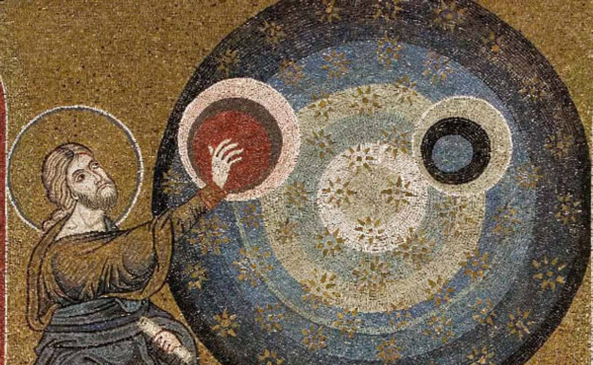
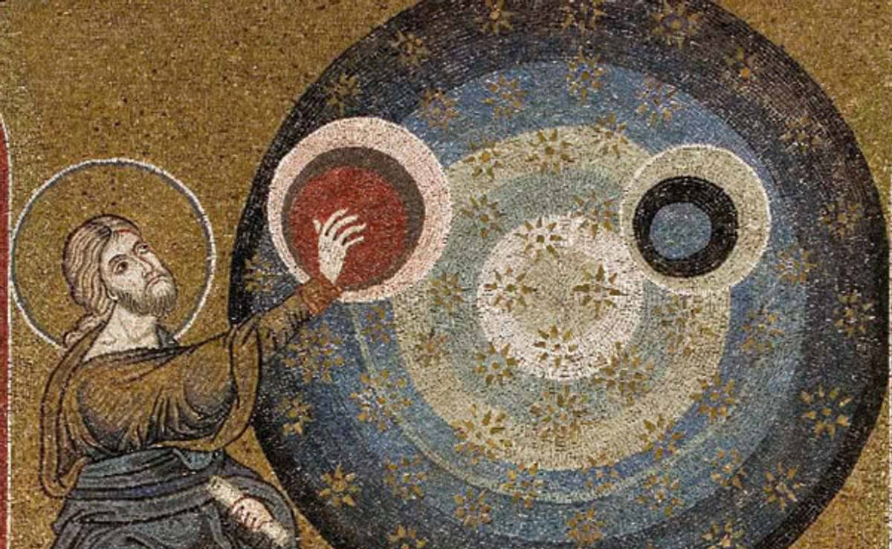

La Creación en la Cultura judeocristiana
En este blog abordaremos el mito de la creación judeocristiana y su simbolismos en la cultura occidental
¿Que trata?
La creación del universo según la tradición judeocristiana, narrada en los primeros capítulos del libro del Génesis, describe cómo Dios creó el mundo en seis días. En el primer día, Dios creó la luz, separándola de la oscuridad y llamando a la luz "día" y a la oscuridad "noche". En el segundo día, Dios creó el firmamento, separando las aguas de arriba de las aguas de abajo. En el tercer día, Dios juntó las aguas debajo del cielo en un lugar, dejando que apareciera la tierra seca, y creó la vegetación.
En el cuarto día, Dios creó los astros celestiales: el sol, la luna y las estrellas, para que sirvieran como señales para las estaciones, días y años. En el quinto día, Dios creó los seres vivos en las aguas y las aves que vuelan sobre la tierra. En el sexto día, Dios creó los nimales terrestres y, finalmente, al ser humano a su imagen y semejanza, dándoles dominio sobre toda la creación. En el séptimo día, Dios descansó, bendiciendo y santificando este día como un día de reposo.

Significado y Simbolismo
En este blog abordaremos el mito de la creación judeocristiana y su simbolismos en la cultura occidental
¿Que trata?
La creación del universo según la tradición judeocristiana, narrada en los primeros capítulos del libro del Génesis, describe cómo Dios creó el mundo en seis días. En el primer día, Dios creó la luz, separándola de la oscuridad y llamando a la luz "día" y a la oscuridad "noche". En el segundo día, Dios creó el firmamento, separando las aguas de arriba de las aguas de abajo. En el tercer día, Dios juntó las aguas debajo del cielo en un lugar, dejando que apareciera la tierra seca, y creó la vegetación.
En el cuarto día, Dios creó los astros celestiales: el sol, la luna y las estrellas, para que sirvieran como señales para las estaciones, días y años. En el quinto día, Dios creó los seres vivos en las aguas y las aves que vuelan sobre la tierra. En el sexto día, Dios creó los nimales terrestres y, finalmente, al ser humano a su imagen y semejanza, dándoles dominio sobre toda la creación. En el séptimo día, Dios descansó, bendiciendo y santificando este día como un día de reposo.

Significado y Simbolismo
- El Orden del Caos: El proceso de creación, que va desde un estado desordenado y vacío hacia un cosmos ordenado, refleja la capacidad de Dios para establecer el orden y las leyes que rigen el universo. Este orden es fundamental para la vida y refleja la naturaleza intencional y estructurada del acto creador de Dios.
- El Número Siete: El uso del número siete, culminando en el día de reposo, tiene un profundo significado simbólico. Representa la plenitud, la perfección y la totalidad. El descanso de Dios en el séptimo día no solo instituye el sábado como un día sagrado, sino que también subraya la importancia del descanso y la contemplación en la vida humana.